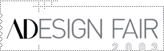
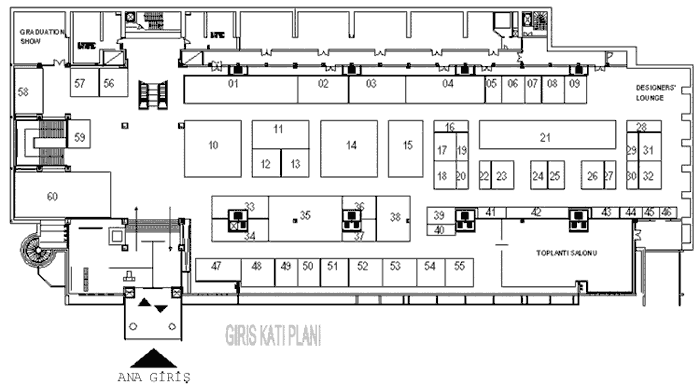

|
"ADESIGN
FAIR 2003" Türkiye'nin ilk uluslararasý tasarým buluþmasý:
Yer: Lütfi Kýrdar Uluslararasý Kongre ve Sergi Sarayý
Rumeli Binasý, Ýstanbul
Tasarým
mimarlýk ve sanat dergisi AD art+decor ve sanat, tasarým ve
moda etkinlikleri üzerine çalýþmalarýný sürdüren Ýkon Fuarcýlýk
iþbirliðiyle düzenlenen ADESIGN FAIR 2003'de yurtiçi ve yurtdýþýndan
çaðdaþ tasarýmcýlarýn ve üreticilerin ürünleri sergilenecek.
"Yaþam
Alaný", "Konsept", "Atölye", "Tasarýmcýnýn Köþesi" baþlýklarý
altýnda dört ana bölümden oluþan ADESIGN FAIR 2003'de alanlarýnda
isim yapmýþ tasarýmcýlarýn katýlacaðý söyleþi ve panellere
de yer verilerek, "workshop"lar düzenlenecek.
Ziyaretçilerin
oylarýyla seçilecek tasarým ve tasarýmcýya "ADESIGN FAIR 2003
Yýlýn Tasarýmý" ve "ADESIGN FAIR 2003 Yýlýn Tasarýmcýsý" ödüllerini
verilecek.
Endüstriyel Tasarýmcýlar Meslek Kuruluþu "ADesign Fair
2003 Tasarým Buluþmasýnda" Ürün Tasarýmý Sergisi düzenliyor:
Tüm
ETMK üyelerinin katýlýmýna açýk olan serginin temasý "Baþka
Yolu Yok: Dýþ Satým için Endüstriyel Tasarým" (No Way
Out:Industrial Design for Export) olarak belirlendi. Tasarýmcýlarýn
özellikle dýþ satým açýsýndan katma deðer yarattýðýna inandýklarý
ürünlerinin sergilenmesinin amaçlandýðý sergi süresince
katýlýmcýlarýn kiþisel veya kurum olarak yaklaþýmlarýný
aktarmaya yönelik sunuþlarýna da yer verilecek.
Yine
sergiye katýlan ürünler arasýndan Seçici Kurul'un belirleyeceði;
"Tasarýmý ile dýþ satým açýsýndan en çok potansiyel yaratan
ürün" ETMK tarafýndan "Dýþ Satýma Yönelik En Ýyi Tasarým
Ödülü" ile ödüllendirilecek.
Endüstriyel
Tasarýmcýlar Meslek Kuruluþu (ETMK) serginin yanýsýra, Türkiye'de
endüstriyel tasarým pratiðini ve ETMK etkinliklerini tanýtýcý
bilgilere ve farklý sektörlerden endüstri kuruluþlarýnýn
yöneticilerinin, dýþsatým açýsýndan endüstriyel tasarýmýn
katma deðer yaratmasýna iliþkin görüþlerine yer vereceði
bir multi-vizyon gösterisi de gerçekleþtirecek.
Destek
veren kurumlar:
TUSÝAD
ETMK - Endüstriyel Tasarýmcýlar Meslek Kuruluþu
GMK - Grafikerler Meslek Kuruluþu
Reklamcýlýk Vakfý
Türkiye Mimarlar Odasý
Detaylý
Program:
10
Eylül 2003 Çarþamba
- 19.30
ADesign Fair 2003 Açýlýþ Töreni
- 20.00-
ÝTKÝB - Genç Tasarýmcýlar Defilesi
- Kokteyl
11
Eylül 2003 Perþembe
- 11.30
Konferans: Piero Lissoni (Lissoni Mimarlýk)
Ölçünün Önemi
Takdim: Yesim Demir
- 14.00
ÝTÜ Endüstriyel Tasarým Toplantýlarý V
Endüstriyel Tasarým Eðitiminde Üniversite - Sanayi Ýþbirliði
Takdim: Prof. Dr. Nigan Bayazýt (ÝTÜ End. Ürün. Tas. Blm.
Bþkn)
KOBÝ'ler için Tasarým: ÝTÜ - Ýstanbul Sanayi Odasý Ýþbirliði
- Doç. Dr. Özlem Er (ÝTÜ)- Doç. Dr. Alpay Er (ÝTÜ)
Proje Milano: Üniversite - Sanayi Ýþbirliðinde Bir Model
Koray Malhan (Koleksiyon)
Üniversite Ambalaj Sanayi Ýliþkileri - Doðan Erberk (Ambalaj
Sanayicileri Derneði)
- 16.00
Film Gösterisi
Proje Milano: Bir Tasarým Öyküsü - Ali Vatansever
- 17.30
Konferans: Hani Rashid (Asymptote) - (Mimar Yunus Aran anýsýna)
Flux / Sanal ile Gerçek Arasýndaki Mimari
Takdim: Suha Özkan
12
Eylül 2003 Cuma
- 11.30
Konferans: Michael Daubner (Burkhardt Leitner Constructiv)
Geçici Mimari: Ofis, Müze ve Sergi Salonlarý Ýçin Taþýnabilir
ve Modüler Sistemler
Takdim: Akýn Nalça
- 13.30
ÝTÜ Endüstriyel Tasarým Toplantýlarý
Türkiye'de Mücevher Sektörü ve Tasarým
Takdim: Prof. Dr. Nigan Bayazýt (ÝTÜ End. Ürün. Tas. Blm.
Bþkn)
Ozan BATIR (Goldaþ) - Nazan Pak ve Ela Cindoruk - Filiz
Vural (Urart) - Murat AKMAN (Dünya Altýn Konseyi) - Hakký
Sezer (Favori Kuyumculuk)
- 16.0
Konferans: Art+Decor Tasarým Dergiciliði ve Dergi Tasarýmý
Takdim: Ahmet Buðdaycý (Art Decor dergisi Yayýn Direktörü)
Umut Kart (Art+Decor Tasarým Editörü) - Beril Tokcan (Beril
Tokcan Creative) - Heike Bering (MD Editör) - Martin Zentner
(Design Report Editör) - Yeþim Demir (Demir Tasarým)
- 18.00
Konferans: Jan Nahum (Fiat Ýtalya)
Otomobil Tasarýmýnda Yeni Eðilimler
Takdim: Nuri Çolakoðlu
- 19.30
Ödül Töreni
ADesign Fair 2003 "Yýlýn Tasarýmý Ödülü" "Yýlýn
Tasarýmcýsý Ödülü"
ETMK "Dýþ Satýma Yönelik Ýyi Tasarým Ödülü"
13
Eylül 2003 Cumartesi
- 11.30
Panel: "Tasarým Ýktidara - Uluslararasý Marka ve Kimlik
Oluþturmada Tasarýmýn Rolü" Panel Yöneticisi: Paul
McMillen (rpm radar)
Katýlýmcýlar: - Renan Gökyay (Nurus) - Mirzat Koç (Flov)
Tanju Özelgin (Parlak Kýrmýzý) - Sertaç Ersayýn (Demirdöküm)
Yeþim Baðrýþen (M.Ü.G.S.F) - Gamze Türkoðlu Güven (ETMK)
- 14.00
Konferans: Mirzat Koç (Flov)
Dokunarak Tasarlamak
Takdim: Yýlmaz Aysan
- 15.30
Panel: "Endüstriyel Tasarýmda Tescil ve Patent Haklarý"
Panel Yöneticisi: Fatma Korkut (ODTÜ)
Katýlýmcýlar: Prof. Dr. Selçuk Demirbulak (M.Ü. Hukuk Fakültesi)
- Av. Dr. Cahit Suluk - Av. Ahmet Keþli - Akýn Nalça - Matthias
Bosch (MK Danýþmanlýk) Hakan Ertem (M.Ü.G.S.F)
- 17.30
Panel: Reklamcýlýk Vakfý
Örgülü Ýliþki: Tasarým ve Reklam
Panel Yöneticisi: Paul McMillen
10-24
Eylül 2003
Sergi: ÝTÜ Endüstri Ürünleri Tasarýmý Bölümü 10. Yýl
Öðrenci Proje Sergisi
ÝTÜ Taþkýþla, Salon 102
Not:
Konferans ve panellerin tümü fuar alanýnda bulunan toplantý
salonunda gerçekleþecek, Türkçe dýþý konuþmalar için simultane
çeviri yapýlacaktýr.
Katýlýmcý
listesi ve yerleþim planý:

Stand
numarasý/ Firma ismi
01 VitrA-Artema
02 Di Legno
03 Bilkom
04 Hewlett Packard
05 Maybe Design
06 Alfanorm
07 Bagg
08 Proje Tasarlatýr
09 Autoban
10 Koleksiyon
11 Paþabahçe
12 My Name is Eve (Decorum)
13 Unitem / TeamBoard
14 Arçelik A.Þ.
15 DemirDöküm
16 Oya Þenocak Akman
17 Gaye Kalavlý
18 Ceyden San (K.Ý.D.S. - Küçükler için Dekoratif Sanatlar)
19 Yoðurt Teknolojileri
20 Zeynep Balaban
21 ETMK
22 Onur Erten (F Design Co.)
23 Burak Oral / Deniz Duru / Serkan Bilir / Nazlý Batýrbaygil,
Cahit Ogün Onat (Eþik Tasarým)
24 Selçuk Gürýþýk
25 T-Design
26 El Turko Art Gallery
27 Çaðla Tanyolaç Taký Tasarým
28 Pemra Saðlýkova Pilevneli
29 Mehmet Ermiyagil
30 Burcu Aksoy / Aslýhan Eroðlu / Murad Babadað / Altan Ünal
31 Peri
32 Refik Tiniþ
33 Renault
34 Total Aydýnlatma
35 Akýn Nalça Modular Spaces
36 Aykut Erol
37 Demirden Ltd.
38 Çilek Genç Odasý
39 Emre Çapoðlu / Fatma Kaliç
40 Hande Gerez
41 Semra Kaliç / Armes Design
42 Evinoks
43 Halide d. Tasarým Dükkaný / Didem Çebi
44 Örge Tulga Taký Tasarýmý
45
46 Reklamcýlýk Vakfý
47 Tarz Tasarým
48 ÝnfoTRON
49 GMK - Grafikerler Meslek Kuruluþu
50 4C Mühendislik
51 JCadLine
52 Cadem A.Þ.
53 Avitaþ
54 Mirzat Koç
55 Medi Proje / Mimarlýk
56 Ýzmir Ekonomi Üniversitesi Moda Tasarýmý Bölümü
57 Ýstanbul Bilgi Üniversitesi (Tasarým Yönetimi)
58 ÝTÜ Endüstri Ürünleri Tasarýmý Bölümü
59 Art+Dekor
60 Nurus
Graduation
Show
Ayþegül Çoktalaþ (ODTÜ)
Iþýl Oygür (ODTÜ)
Berdan Çerçioðlu (ODTÜ)
Nancy Ödemiþ (Yeditepe Üniversitesi)
Betsy (Yeditepe Üniversitesi)
Burcu Yoncat (ÝTÜ)
Çiðdem Kaya (ÝTÜ)
Can Uçkan (ÝTÜ)
Ebru Sile (Bilgi Üniversitesi)
Muhittin Bilginer (Bilgi Üniversitesi)
Mahir Mustafa Yavuz (Bilgi Üniversitesi)
Designers'
Lounge
Derin
Daha
fazla bilgi için:
Fuar web sitesi: www.adesignfair.com
Lütfi Kýrdar Uluslararasý Kongre ve Sergi Sarayý web sitesi:
www.icec.org
|